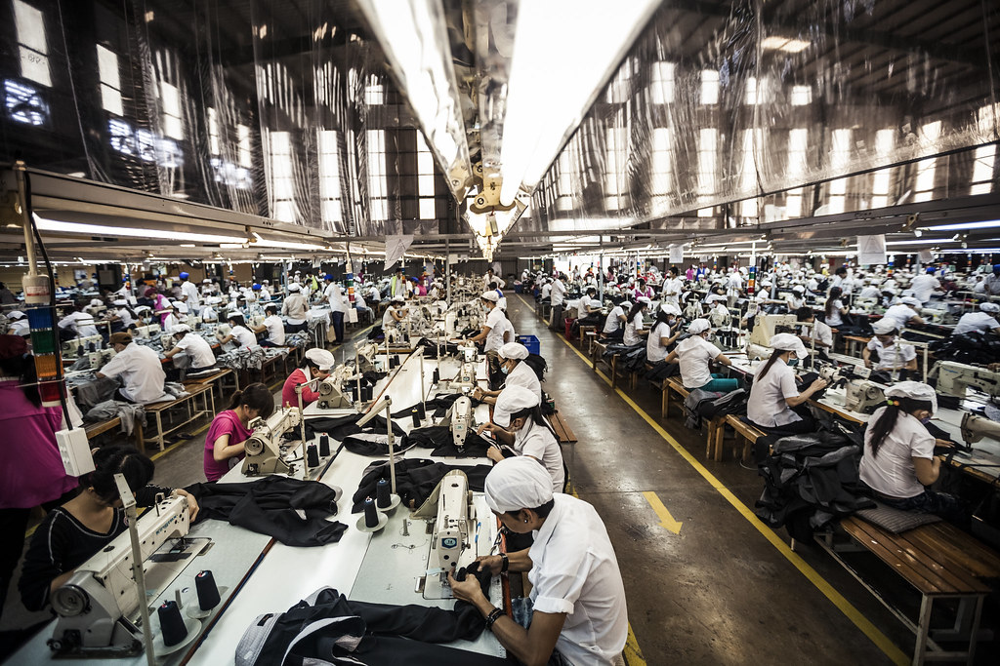

The Sustainable Stitch

WHAT IS SUSTAINABILE FASHION?
Sustainable fashion is an umbrella term for clothing that's created and consumed with a focus on long-term environmental and ethical viability. It's about cutting CO2 emissions, tackling overproduction, reducing pollution, and ensuring fair wages and safe working conditions for those who make our clothes.
Learn more: Vogue's Ultimate Guide to Sustainable Fashion

WHY SHOULD I CARE?
Did you know that the fashion industry is one of the leading contributors to environmental degradation? According to a report by the United Nations Environment Programme (UNEP), the fashion industry is responsible for 10% of global greenhouse gas emissions and consumes more energy than the aviation and shipping industries combined.
Furthermore, the fast fashion culture has led to a staggering amount of textile waste. In the United States alone, the average consumer throws away a shocking 81.5 pounds of clothing every year, as reported by Earth.org. These discarded clothes end up in landfills, where they take years to decompose, releasing harmful chemicals into the environment.
Source: UNEP's Fashion and Environment Report, Statistics About Fast Fashion Waste

HOW CAN I MAKE A DIFFERENCE?
Taking action to promote sustainability in fashion doesn't mean you have to stop shopping altogether. Instead, it's about making conscious choices that align with your values. Every small change can contribute to a more sustainable fashion industry.
Here are some steps you can take:
1. Mindful Shopping: Before making a purchase, ask yourself whether you really need the item and if you'll wear it often. By choosing quality over quantity, you can reduce the demand for fast fashion.
2. Support Sustainable Brands: Look for brands that prioritize sustainability in their practices, from sourcing eco-friendly materials to ethical production. Supporting these brands encourages others to follow suit.
3. Explore Thrifting: Thrift stores offer a treasure trove of unique and affordable fashion finds. By buying secondhand, you extend the life of clothing and reduce the demand for new production.
4. Educate and Influence: Share your knowledge about sustainable fashion with friends and family. Your influence can inspire others to make conscious choices too.
5. Repair and Upcycle: Instead of discarding damaged clothing, consider repairing or upcycling them. Get creative and breathe new life into your old favorites.
6. Reduce Microplastic Pollution: Use a microplastics filter, such as a Guppyfriend washing bag, to prevent microplastics from synthetic clothing from entering our waterways during washing.
By embracing these practices, you can make a positive impact on the fashion industry while still enjoying fashion.